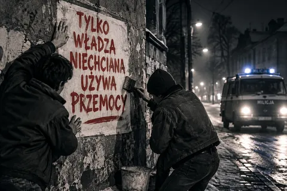
Chcieli tylko wolności dla ludzi i niepodległości dla Polski
4 czerwca 1989 roku w całej Polsce trwały wybory. Ludzie szli do urn i skreślali kandydatów komunistycznej władzy. W Kętrzynie milicyjny radiowóz…
Jarosław Żukowski
Historia i przyszłość
Piszę o przeszłości. Pomagam zabezpieczyć przyszłość.
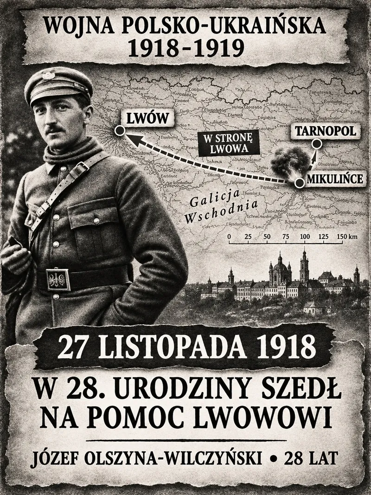
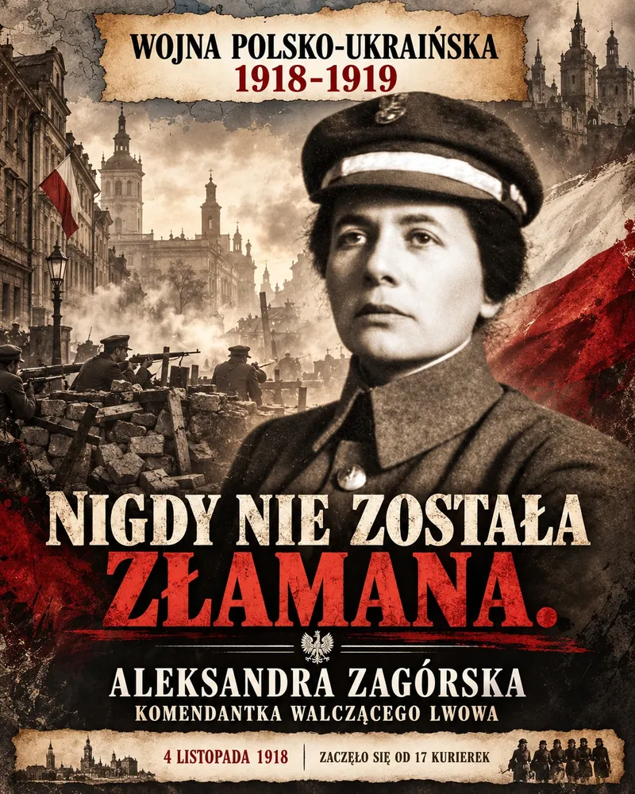
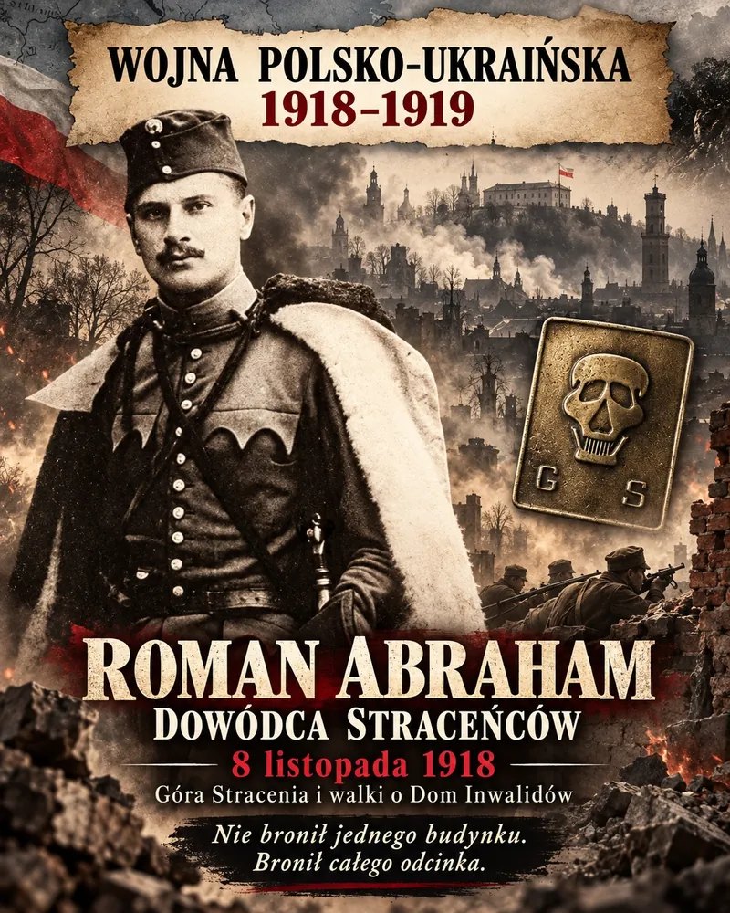
Ludzie, wydarzenia, historie. Od nocy z 31 października 1918 roku opisuję kolejne dni walk o Lwów i losy jego obrońców: uczniów, legionistów, kurierek i lotników.
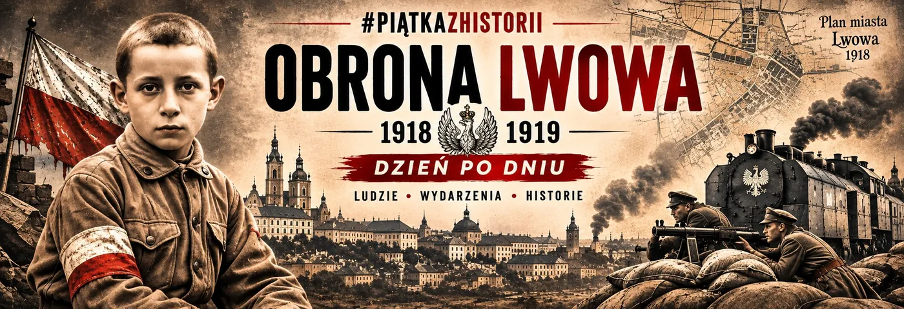
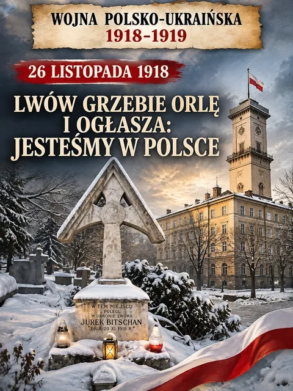
26 dzień walk Tyle krwi oddał dla Lwowa - napisał w pamiętnikach późniejszy dziennikarz Radia Lwów Wiktor Budzyński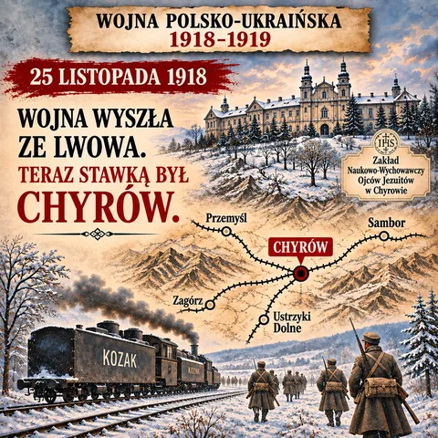
25 dzień walk Ukraińcy chcieli udusić miasto. Rozwadowski miał swój plan na zwycięstwo w tej wojnie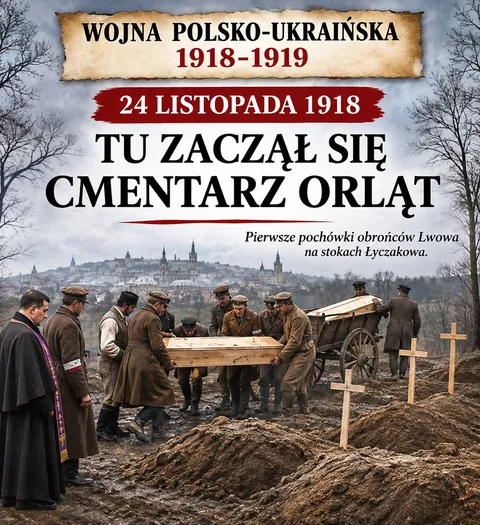
24 dzień walk Cmentarz Obrońców Lwowa. Początek jednej z najważniejszych polskich nekropolii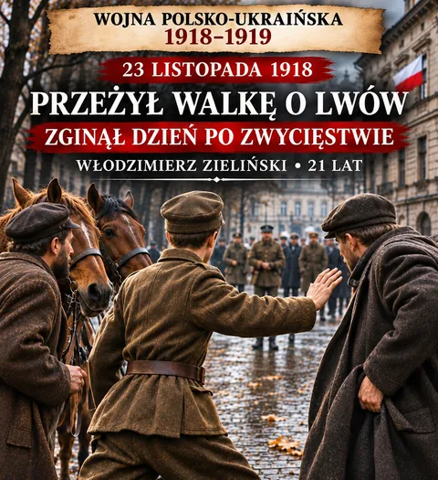
23 dzień walk Zastrzelili go jacyś dwaj cywile, niemal na moich oczach - napisał o tej zbrodni Tadeusz Kielanowski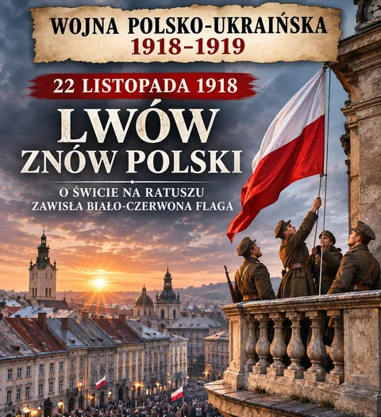
22 dzień walk Maurycy Ignacy Baczes, lwowski Żyd, który przeżył pogrom i potem został znanym adwokatem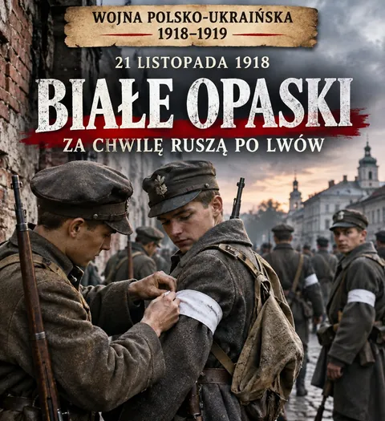
21 dzień walk Wieczorem Ukraińcy podjęli decyzję, by wycofać się z miasta. Lwów był polski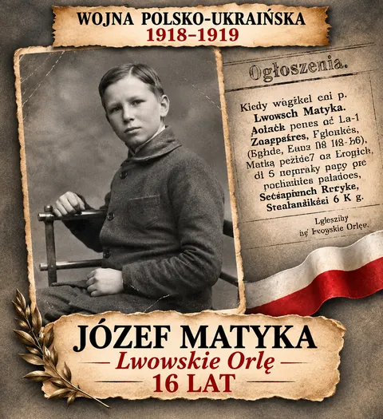
20 dzień walk Rodzice szukali dwóch synów. Tymczasem przez ostrzał i zniszczone mosty do Lwowa przedzierała się odsiecz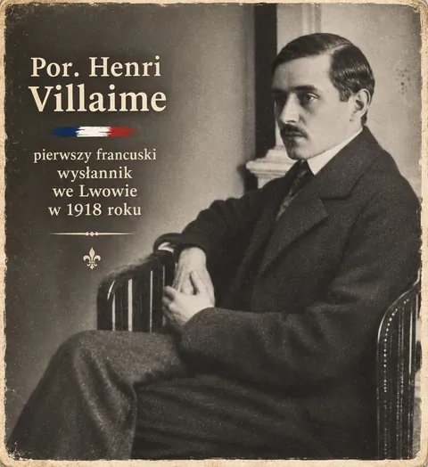
19 dzień walk Ukraińcom powiedział, że walcząc z Polakami, walczą z Ententą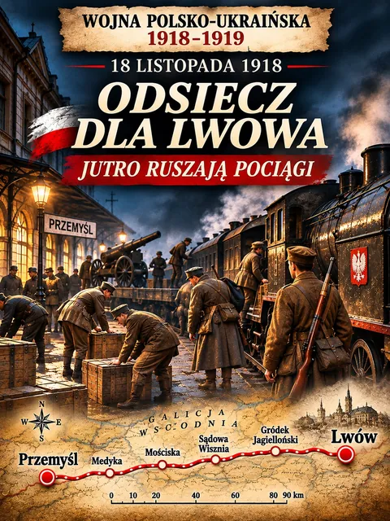
18 dzień walk 18 listopada w Przemyślu już szykowali pociągi, które miały ruszyć na ratunek oblężonemu Lwowowi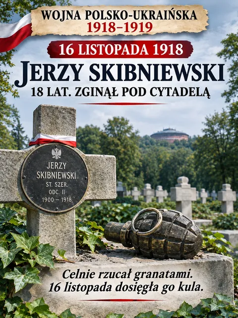
16 dzień walk Skutecznie rzucał granatami w ukraińskie pozycje. W końcu trafił go śmiertelnie ukraiński strzelec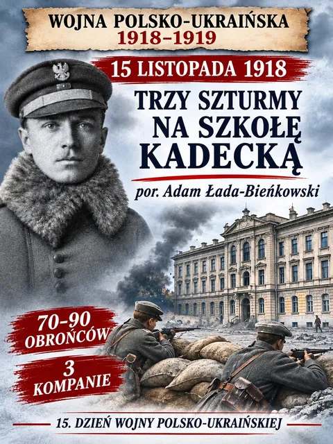
15 dzień walk Bohater obrony Lwowa zginął w Puszczy Kampinoskiej, zastrzelony przez NiemcówReportaże, biografie i opowieści historyczne: od zaborów, przez II Rzeczpospolitą i wojnę, po PRL i rok 1989.

4 czerwca 1989 roku w całej Polsce trwały wybory. Ludzie szli do urn i skreślali kandydatów komunistycznej władzy. W Kętrzynie milicyjny radiowóz…
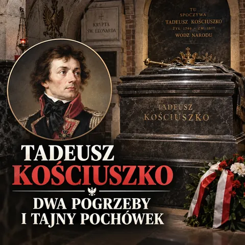
Tadeusz Kościuszko, bohater Polski i Stanów Zjednoczonych, zmarł 15 października 1817 roku w szwajcarskiej Solurze. Pierwszy pogrzeb odbył się już…
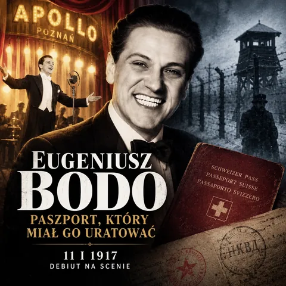
Gdy w styczniu 1917 roku debiutował na scenie teatru Apollo w Poznaniu, nikt nie mógł wtedy przypuszczać, że chłopak o szwajcarskich korzeniach…
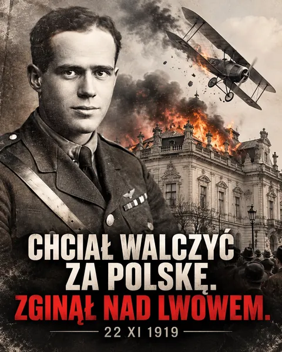
Był milionerem, absolwentem Harvardu i jednym z najlepszych pilotów akrobacyjnych swoich czasów. Przyjechał do Polski, bo podczas I wojny światowej…
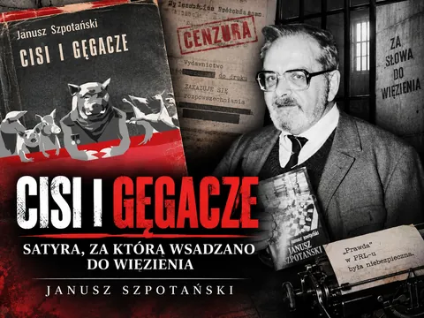
W ostatniej kampanii prezydenckiej słowo „alfons” powróciło do polskiej polityki za sprawą doniesień dotyczących przeszłości Karola Nawrockiego.…
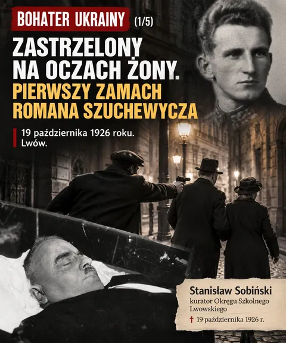
19 października 1926 roku. Lwów. Godzina 18.15. Ulicą Królewską idzie małżeństwo. 54-letni Stanisław Sobiński, kurator Okręgu Szkolnego Lwowskiego…
Wszystkie teksty uporządkowane według epok, tematów i postaci. Ostatni przystanek na tej osi to Pana i Pani przyszłość.
Ubezpieczenie nie powinno zaczynać się od wyboru polisy. Powinno zacząć się od prostego pytania:
co chcesz zabezpieczyć?
Możemy porozmawiać m.in. o:
Dobra polisa nie zaczyna się od składki. Zaczyna się od odpowiedzi na pytanie, co ma chronić.
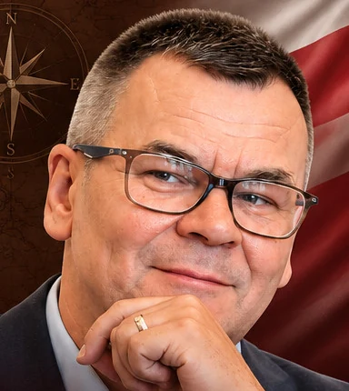
Historia uczy, by mądrzej budować przyszłość.
Jestem dziennikarzem. Piszę o historii Polski, Lwowa i ludziach, którzy ją tworzyli: reportaże, biografie i opowieści historyczne. Pomagam też rodzinom zadbać o bezpieczeństwo finansowe i przyszłość.